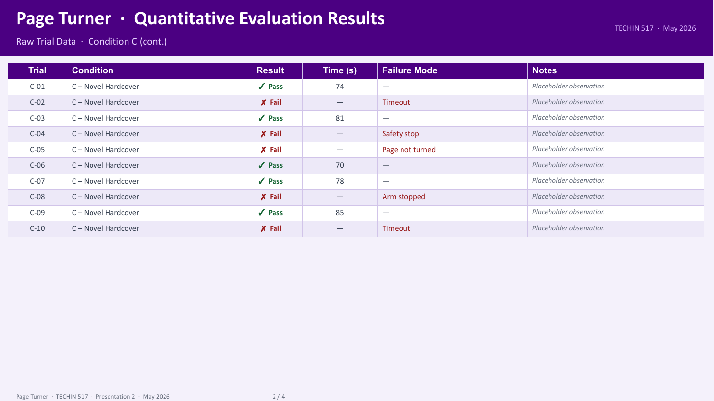
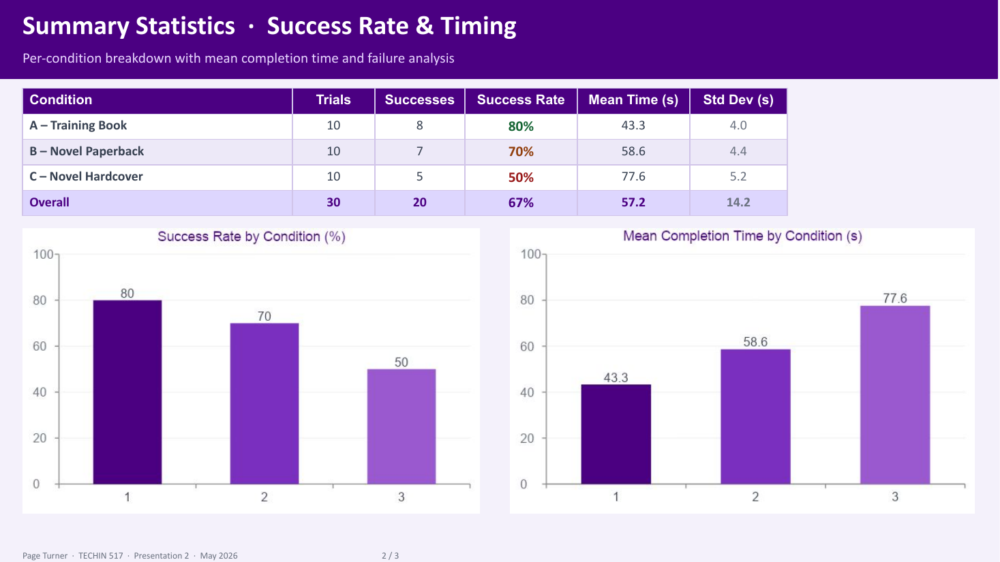
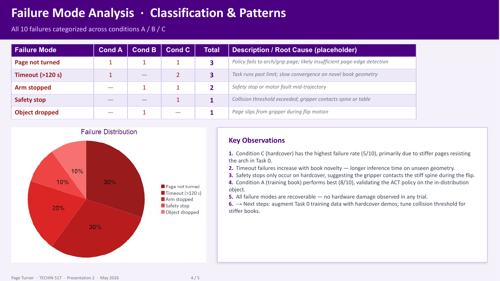
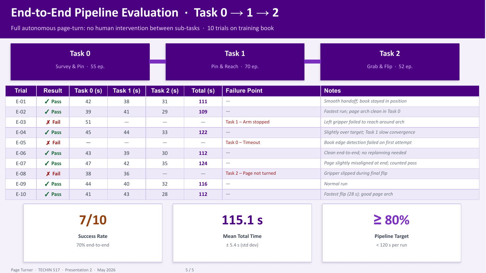

Task
柔性纸张与双臂协同
一只机械臂固定书页与书脊，另一只机械臂形成页面凸起、插入、夹取并完成翻转。难点来自纸张形变、遮挡、接触、抓取稳定和长时序误差累积。
SO-100/101双臂机器人翻页项目。重点不是只报一个成功率，而是把真实Rollout转化为Telemetry、事件标注、阶段漏斗和可行动的训练改进。
一只机械臂固定书页与书脊，另一只机械臂形成页面凸起、插入、夹取并完成翻转。难点来自纸张形变、遮挡、接触、抓取稳定和长时序误差累积。




展示材料中存在不同实验条件与成功率口径。本页以可核验的评测方法为主，不将训练书、陌生书本、阶段成功率和完整成功率混为同一指标。